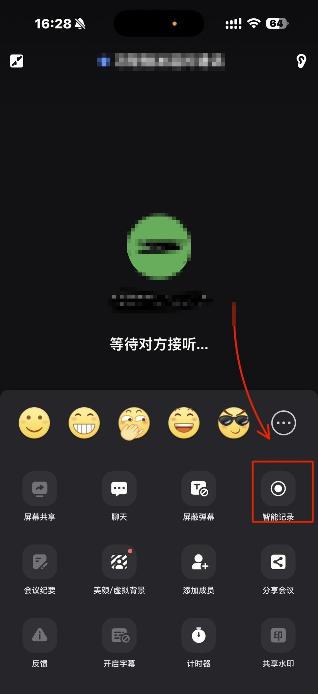
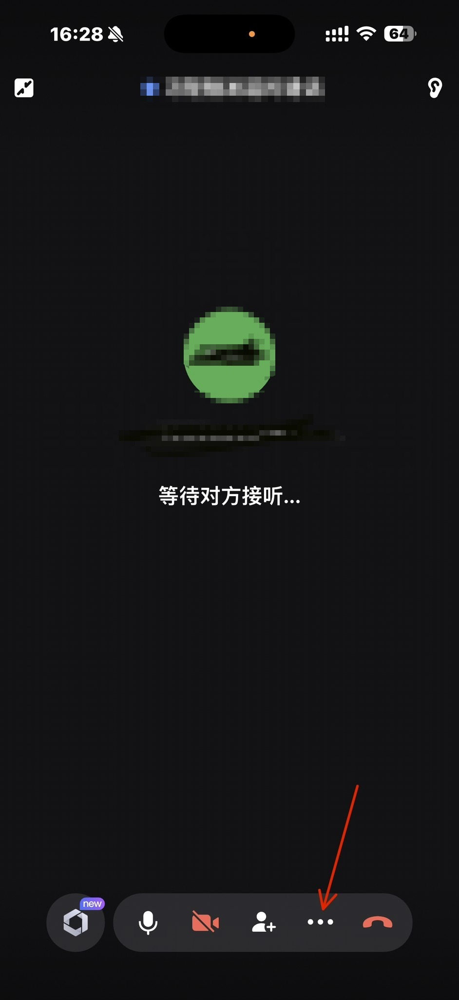
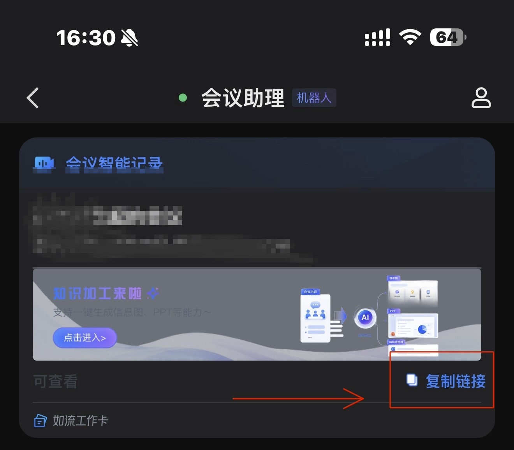

面试前 Pretalk 智能备注
将业务筛选通过后的候选人 Pretalk 通话，转化为可直接录入招聘系统的一段备注。输出突出在职/离职状态、变动原因、薪资和求职意向，而不是笼统复述对话。
智能记录 / 转写 → 标准化系统备注查看下方流程 ↓
围绕简历筛选、岗位人才评估和面试前沟通，把分散、重复的招聘信息转化为可追溯、可复用的 AI 工作流。
覆盖候选人进入流程前后的关键环节：初筛、岗位匹配判断、面试前信息沉淀与后续协作。
将业务筛选通过后的候选人 Pretalk 通话，转化为可直接录入招聘系统的一段备注。输出突出在职/离职状态、变动原因、薪资和求职意向，而不是笼统复述对话。
将岗位要求转化为一致的初筛口径，快速提炼教育背景、项目经历、技能匹配点与待确认问题，减少重复阅读简历的时间成本。
围绕 C 端 AI 应用增长、内容营销、效果投放、AI Native 与发布会操盘能力，给出结构化匹配判断。
识别云与 AI 产品经验、技术理解、产品营销/技术传播经历及内容能力，形成可复核的评估结构。
聚焦文字内容能力、技术传播、AI 内容产出及候选人方向匹配，区分真正的内容/传播能力与不匹配经历。
以面试前 Pretalk 智能备注为例，展示将原始信息接入 AI 工作流的最短路径。示意截图已完成脱敏。

通话中生成可检索的会议内容，减少人工回忆和手写记录。

通话结束后取得可供 AI 处理的记录或转写信息。

由 AI 按既定规则提炼重点，产出一段可直接入库的文字。
工具的设计重点不是泛化总结，而是将岗位要求和招聘语境转成可执行的判断规则，让输出可以被复核、被追问、被直接使用。
从招聘动作出发，明确“谁在什么节点需要什么信息”，而非直接要求 AI 写一段泛泛总结。
把岗位硬条件、评估维度、变动原因与待确认项拆成规则，使不同候选人的输出保持一致口径。
要求 AI 仅基于输入事实作答；信息不足时标注待确认，不补全猜测，不把候选人变成分数或标签。
控制结构、长度和语言风格，让结果能直接进入招聘系统或作为面试沟通的判断依据。
输出以事实为边界，把决定是否推进候选人的关键信息放在首位，而不是把通话内容拉长。
20261120候选人目前在职，计划寻找新的发展机会，主要原因是当前业务进入稳定阶段，工作内容重复度较高，团队调整后可承担的职责边界变窄，希望寻找更有成长空间的岗位。当前月薪约2.5万，期望薪资在现有基础上有一定涨幅，接受北京base，暂无明确其他offer。
以下为对外展示的实现逻辑。项目不公开内部系统地址、真实简历、候选人信息或授权内容。
将自然语言输入拆为可判断事实，再结合具体岗位或流程节点匹配不同规则，最后生成固定格式的结果。招聘同学始终保留最终判断权。
这个项目的源码、页面结构和脱敏素材均可在同一仓库中查看。
function buildRecruitingNote(input, roleRules) {
const facts = extractFacts(input, [
"employmentStatus", "changeReason",
"salary", "expectation", "location"
]);
const rules = selectRules(
facts.employmentStatus,
roleRules
);
const result = summarize(facts, rules, {
evidenceOnly: true,
unknown: "待确认",
format: "singleParagraph",
length: "100-150 Chinese characters"
});
return validate(result, roleRules);
}页面仅展示项目方法、流程示意和虚构输出示例；不包含真实候选人简历、通话内容、内部系统入口或身份授权信息。